Подготовка к работе
Для работы с React нам понядобится Node.js и пакетный менеджер npm. Устанавливаем Node.js и вместе с ним установится пакетный менеджер.
Создаем папку с проектом, открываем ее и зажимая Shift жмем ПКМ по свободному полю в папке. Откроется меню и нам надо выбрать Открыть окно команд. Запустится коммандная строка.
В коммандной строке пишем такой код:
npx create-react-app new-projectГде new-project - название нашего проекта. Жмем Enter и ждем ока создастся проект. Сначала, если не установлен create-react-app, пакетный менеджер установит эту библиотеку, а только затем создаст проект.
После того как все будет готово мы увидим лог:
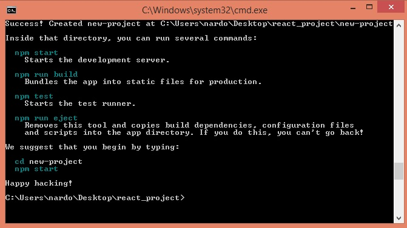create-react-app создаст минимальный комплект файлов который необходим для React приложения. Перетаскиваем эту папку с проектом Sublime Text.
Обзор проекта
Что же там создалось?
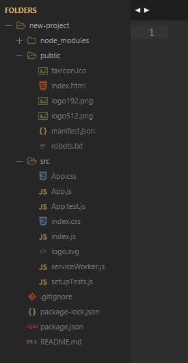В папке node_modules хранятся различные библиотеки, которые служал для работы React и для различных сборщиков
Файл gitignore служит для того что бы некоторые ненужные файлы не попадали в систему контроля версии Git
Файл package.json который является инструкцией для всего нашего пакета и этого приложения
В папке public присутствуют различные файлы:
- favicon.ico - дефолтная иконка
- manifest.json
- index.html - тот самый файл, который запускает наше приложение, иными словами наше приложение - это одностраничник. В файл html есть div с id root, куда сы будем складывать наше приложение.
В папке src так же присутствуют n-ое количество файлов
- index.js - все наше приложение запускается из него. Здесь, если посмотреть, что происходит, то мы сначала импортируем React, затем reactDOM, далее подключаем определенные стили, потом компонент App и сервис serviceWorker. Для того что бы запустить приложение, мы обращаемся к библиотеке ReactDom и вызываем метод render, где мы рендерим компонент APP и дальше мы его складываем в div с id root, который находится в index.html
- App.js - по сути это самый обычный react компонент, который создан через ключевое слово function и который возвращает определенный синтаксис. В круглых скобках мы пишем как бы html, но на самом деле это JSX. JSX - это такой специальный снтаксис в React, который выглядит как html, но на самом деле это просто удобные ярлыки, которые по факту работают с функциями, которые есть в React.
Запуск приложения
Для того что бы запустить приложение, открываем папку с проектом и запускаем оттуда окно комманд (Shift + ПКМ -> "Открыть окно команд")
В CMD вводим команду
npm startОткроется браузер где будет запущено наше приложение
Первые шаги
Теперь для того что бы мы могли разрабатывать наше приложение внесем в базовую структуру некоторые изменения. Во-первых мы откроем файл App.js и и удалим там все импорты, кроме импорта React
Дялее в функции App() удалим все что в круглых скобках после return. В итоге должно получиться так:
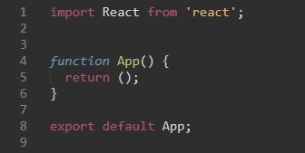Затем внутри круглых скобок добавим обыкновенный блок div.
Теперь из проекта удалим файлы App.css и logo.svg
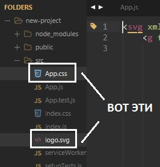Теперь если посмотреть в браузере, мы увидим пустую страницу
Теперь тому блоку что мы поместили в App.js Необходимо задать класс. Обычно в html что бы указать класс элементу, мы писали просто слово class, но в JSX мы должны указывать слово className. Зададим блоку класс - wrapper
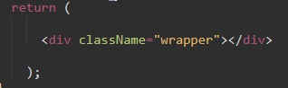Теперь в папке src проекта открываем файл index.css. Это файл с глобальными стилями, в нем мы прописываем стили к нашему блоку wrapper
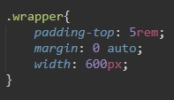Возвращаемся в App.js
В React основным принципом является компонентный подход, поэтому мы можем разрабатывать все наше приложение в отдельных компонентах и дальше их комбинировать.
Как это будет выглядеть?
В папке src мы создаем новую папку, которую называем Todo. В этой папке будем хранить все компоненты, которые будут относится к нашему приложению Todo (список дел - Todo-list)
Например первый компонент который мы создадим будет называться TodoList.js (в папке Todo создаем файл с именем TodoList.js)
Этот файл необходимо превратить в React компонент. Здесь для этого есть два основных правила.
Первое - мы всегда должны импортировать библиотеку React из 'react'
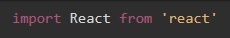Без этого компонент не будет работать.
Второе - мы должны что-то экспортировать наружу. Этим что-то будет являться обыкновенная функция, поэтому мы будем экспортировать по дефолту функцию TodoList (функцию называем так же как компонент) В React принято, что компоненты называются с заглавной буквы.
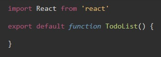Эта функция должна нам вернуть какой-то JSX код:

Теперь для того что бы данный компонент подключился к нашему приложению, нам необходимо его добавить в компонент App.js. Для этого в файле App.js в разделе импорта добавим строчку:
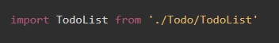Теперь для того что бы данный компонент добавить в общий шаблон (весь код JSX который возвращает return называется шаблоном), мы можем функцию TodoList превратить в обыкновенный html тег, который мы помещаем внутрь div wrapper:

Добавление стилей
Помимо того что мы можем добавлять стили в файл index.css, мы так же можем их прописывать в JSX. для этого в файл TodoList создадим вот такой объект:
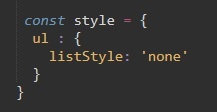У объекта style есть свойство ul, которое так же является объектом. У этого объекта есть свойство listStyle со значением 'none'. Почему listStyle, а не list-style как в css? Дело в том, что в JavaScript нельзя использовать дефис в именах, поэтому используется camelCase (т.е. вместо дефиса следующее слово пишется с заглавной буквы).
Теперь для того что бы стили применились в ul, в теге ul добавляем свойство style и используя фигурные скобки обращаемся к объекту style и к его свойству ul. Вообще в React фигурные скобки означают, что внутри них помещается код JavaScript
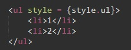Динамическое заполнение компонента
Сейчас элементы списка li заполнены статически, но что если нам надо их заполнять динамически. Для этого создадим еще один компонент TodoItem. В папке src/Todo создадим еще один файл и назовем его TodoItem
В него точно так же импортируем библиотеку React и создаем функцию, которая будет экспортироваться по дефолту:
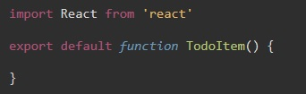Эта функция будет возвращать JSX код
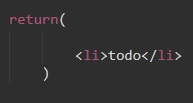Теперь возвращаемся в файл TodoList и правим там код. Во-первых надо импортировать компонент TodoItem
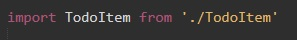Затем вместо тега li мы указываем наш новй компонент
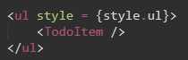Теперь добавим динамичности нашему приложению. для этого в файле App.js в функции создадим массив todos, где каждый элемент массива будет объектом с тремя ключами:
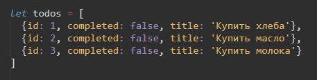Теперь данный массива нам надо отобразить в компоненте TodoList. Для этого нам необходимо в компоненте TodoList файла App.js обозначить какие свойства мы будем принимать, для того что бы передать в него данный массив
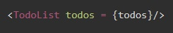Иными словами для того что бы передать наш массив компоненту TodoList (т.е. что бы данные стали видны в файле TodoList.js) мы создали в компоненте TodoList свойство todos и с помощью JS передали туда наш массив
Теперь переходим в файл TodoList. Здесь нам в функции TodoList необходимо добавить входной параметр - props. Иными словами наша функция примет некоторый props, который будет являться обьектом у которого есть ключ соответствующий значению свойства компонента, в нашем случае это массив todos
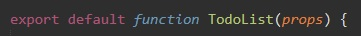Теперь в нашем шаблоне нам необходимо динамически вывести данные элементы, потому что мы не знаем сколько в массиве будет объектов.
Для этого обратимся через входной параметр props к массиву todos и применем к нему метод map. На каждую итерацию цикла метод map будет возвращать объект todo (элемент массива) и дальше в callback функции мы будем возвращать компонент TodoItem. И в свою очередь мы компоненту TodoItem передадим свойство todo и в него поместим, то что нам вернут метод map
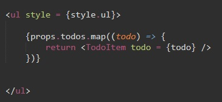Теперь переходим в файл TodoItem, в функции компонента так же добавляем входной параметр, с той только разницей что мы теперь знаем что получаем объект todo, поэтому входной параметр указываем в фигурных скобках.

Т.е. мы обращаемся к объекту который нам вернул метод map
Код JSX компонента TodoItem будет выглядеть так:
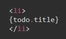Внутри тега li мы обращаем к входному параметру функции и обращаемся к полю title.
Теперь если мы посмотрим в консоль, мы увидим ошибку, в которой сказано, что в React каждый итерируемый объект должен иметь уникальное свойство key. Поэтому в файле TodoList в теле цикла компоненту TodoItem добавляем свойство key и даем ему значение {todo.id}
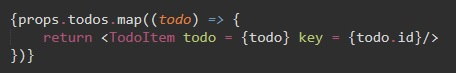Теперь допустим, что нам надо каждому элементу списка присваивать очередной номер и выводить его на экран, рядом с элементом списка.
Для этого в файле TodoList в цикле map добавим еще один входной параметр стрелочной callback функции - index. В методе map второе значение callback функции принимает значение индекса элемента в массиве, а компоненту TodoItem зададим новое свойство index, которое нам возвращает map
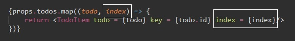Теперь переходим в файл TodoItem.js и в функции добавляем новый входной параметр index
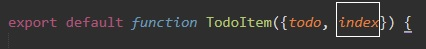А возвращаемы код JSX теперь будет выглядеть так: новый параметр index обарачиваем в тег strong, а самому значению index прибавляем - 1, т.к. отсчет элементов в массиве начинается с 0
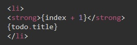Prop Types
JavaScript является не типизированным языком и здесь мы можем добавлять одним и тем же переменным разные типы значений. Есть потенциальные ошибки при передаче свойств. Поэтому в реакт хорошей практикой считается описание входящих свойств в определенный компонент. Для этого нам необходимо установить дополнительную библиотеку которая называется 'prop-types'
Запускаем терминал из папки с проектом (Shift + ПКМ - Открыть окно команд) и вводим такую строку
npm install prop-typesПосле того как установка завершится нам необходимо перезапустить наш проект.
npm startТеперь мы можем пользоваться библиотекой prop-types для того что бы определять входящие свойства. Начнем с компонента TodoList. Переходим в него.
Мы знаем что в данный компонент мы принимаем параметр todos, поэтому нам необходимо его валидировать (т.е. указать какой тип данных должен иметь этот параметр, в нашем случае это массив).
Для начала в разделе импорта пропишем библиотеку prop-types
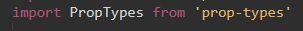Теперь для того что бы добавить валидацию свойству, немного изменим код нашей функции шаблона. Убираем у нее операторы экспорта по дефолту, после чего в самом конце файла добавляем строку - export default TodoList. иными словами мы экспортируем нашу функцию не сразу при инициализации и после. Вот как это стало выглядеть:
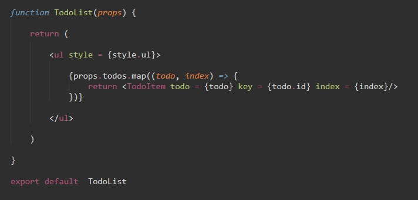Теперь перед экспортом мы обращаемся к нашей функции TodoList, создаем у нее новое свойство propTypes. В это свойство мы помещаем объект, где мы будем описывать типы данных свойств. В качестве ключа будет название свойства, а в качеестве значения ключа будет тип данных. Что бы задать тип данных мы будем обращаться к библиотеке PropTypes и вызывать у нее метод соответствующий типу данных свойства:
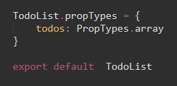С помощью PropTypes можно устанавливать более сложную валидацию. К примеру мы знаем что наш массив todos должен состоять из объектов (обращаем внимание на то, что теперь не просто array, а arrayOf). Так же мы добавляем метод isRequired - который говорит о том, что это свойство обязательно. Выглядеть это будет так:
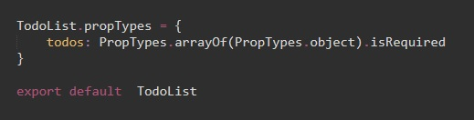Вот как на данном этапе выглядит наш файл TodoList
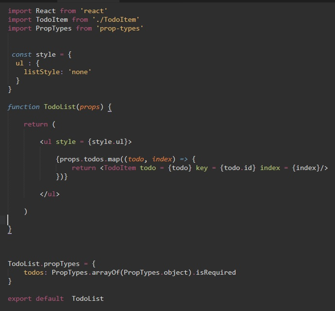Теперь добавим валидацию для компонента TodoItem. Здесь мы получаем два параметра (todo и index). Точно так же убираем у функции шаблона export default и в конце файла добавляем сточку
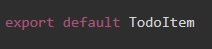Не забываем импортировать библиотеку PropTypes, а перед export создаем новый ключ PropTypes для нашей функции:
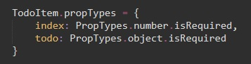Стилизация
Теперь поработаем над шаблоном каждого элемента li и превратим его во что-то более красиваое. Переходим в компонент TodoItem и меняем структуру JSX
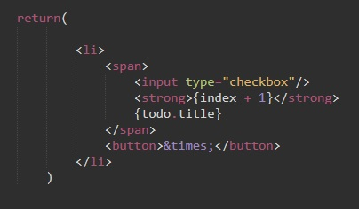Мы добавили input с типом checkbox, кнопку в которую поместили символ html (крестик). Теперь добавим немного стилей. Создадим объект style который будет в себе содержать стили для всех элементов
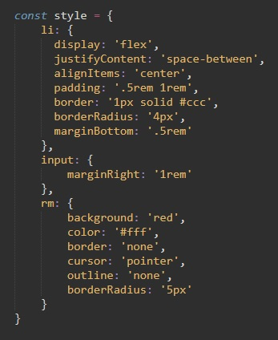Теперь что бы стили применились, создадим у элементов свойство style и с помощью JS обратимся в нашему объекту, так же между индексом и title добавим html сивол пробела
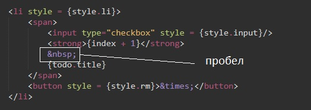События
Теперь нам необходимо сделать так, что бы при нажатии на checkbox надпись зачеркивалась
Для этого нам надо работать через корневой компонент App.js. Массив todos на самом деле является определенным стейтом (state) и мы не можем изменять отдельный компонент где-то в дочерних элементах. Если мы что-то меняем, нам необходимо изменять сам стейт. Поэтому задача звучит так: при нажатии на checkbox мы должны по тому элементу, по которому мы кликнули изменить у него флаг completed на противоположное значение. И только после этого перерисовывать все дочерние элементы т.е. TodoList и TodoItem.
Для начала разберемся как мы вообще добавляем определенные события для элементов в JSX
Мы добавляем новый атрибут для input, например это может быть атрибут onChange, дальше в качестве значения мы указываем фигурные скобки (т.е. внутри будет JS)? куда мы должны передать callBack который должен будет выполнен.
onChange название не произвольное, это реальный атрибут тега, как в HTML.
Рассмотрим такой код:

callback функция выводит в консоль id элемента по которому кликнули. Теперь нам надо передать данное событие в родительский элемент. Для этого мы можем принимать в компоненте TodoItem еще один параметр. Это будет событие onChange
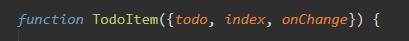И все что мы будем делать когда будет происходить событие onChange input - мы будем вызывать событие onChange - то самое которое является входным параметром у функции TodoItem и передавать в него todo.id.
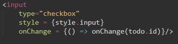Далее опишем новый входной параметр функции TodoItem - onChange в PropTypes
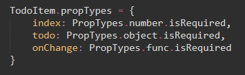Теперь мы знаем, что в компонент TodoItem мы передали функцию onChange. TodoItem у нас выводится в списке компонента TodoList, поэтому для каждого Todo элемента нам надо передать свойство onChange. Но данное событие нам необходимо соединить с родительским элементом App.js, поэтому в это свойство мы будем передавать объект props с методом onToggle (название метода произвольное, позднее в компоненто App.js мы его опишем). Итак переходим в компонент TodoList и правим там код:
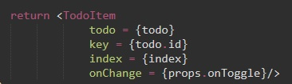Теперь так же в TodoList опишем в PropTypes новый метод onToggle
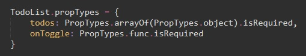Теперь переходим в файл App.js и в шаблоне компоненту TodoList добавляем новое свойство onToggle и передаем ему метод который назовем toggleTodo (название так же произвольное)
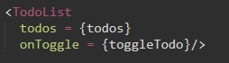Данный метод надо определить в компоненте App.js. Это будет самая обыкновенная функция, которая будет принимать в себя id и для проверки выведем этот id в консоль
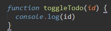Теперь зная id мы можем изменять state (массив объектов todos). Для этого мы обращаемся к массиву и применяем метод map, т.е переопределяем массив. Метод map возвращает callback который принимает объект todo (элемент массива на каждой итерации) и мы проверяем, если id элемента равен id (входному параметру функции toggleTodo) то мы меняем значение ключа completed на противоположный, затем мы возвращаем todo
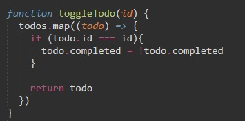Хук - useState
Добавим в компонент TodoItem (в функцию) перед return строку:
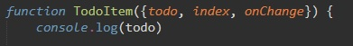Эта строчка должна перерендрится и вызываться каждый раз когда мы изменяем флаг checkbox. Но этого не происходит. Почему?
Таким образом как мы задали state (наш массив) в React мы задавать не можем. Для того что бы определить state, за которым будет следить React и для того что бы перерендрировать наш шаблон и добавлять динамики приложению, мы должны определять state иначе. Мы не можем просто так завести переменную, на мнужно воспользоваться специальной функцией в React которая называется useState.
useState - это хук. Здесь идея заключается в том, что мы создаем некоторую переменную, например назовем ее q, которая будет результатом работы React и его функции useState
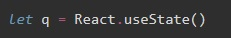В функцию useState мы передаем некоторое начальное состояние, которое мы хотим задать для данного state-a, т.е в нашем случае это будет наш массив с объектами
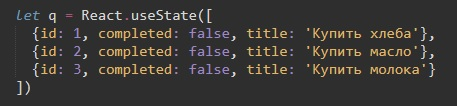Как теперь нам получить state и что вообще возвращает функция useState?
Функция useState нам возвращает массив состоящий ВСЕГДА из двух элементов. Первый элемент - это непосредственно само состояние, т.е оно будет равно дефолтному состоянию state. Второй элемент - это функция позволяющая изменять данное состояние state при том что React будет фиксировать эти изменения и на них реагировать. Для того что бы было комфортно с этим работать мы можем избавится от переменной q и записать код с использованием диструктуризации:
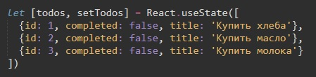setTodos - это функция, которая нам позволит изменять state (по конвенции имя метода позволяющего изменять state должно начинаться с set)
Теперь в функции toggleTodo мы можем воспользоваться методом setTodos. Для этого просто вызовем этот метод и на фход дадим ему результат метода map
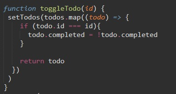Теперь при нажатии на checkBox в консоль выводится весь наш массив, т.е консоль-лог который мы прописали в TodoItem рендрится, React отслеживает изменение state
Динамические CSS классы
Теперь необходимо отобразить то, что мы выполнили todo (дело в списке) т.е. поставив checkbox в значение true - надпись должна зачеркнуться.
Для этого мы добавим дополнительный класс в index.css
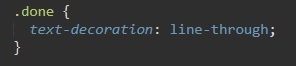Далее нам этот класс необходимо добавлять в компонент TodoItem в зависимости от пола completed (если false то класса done нет, если true - то класс done добавляется.)
В функции TodoItem перед return мы заводим переменную classes, которая по умолчанию будет пустым массивом:
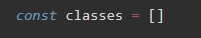Дальше мы спрашиваем: если todo.completed находится в значении true, то тогда массиву clases мы пушим класс done
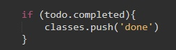Теперь данный массив нам необходимо передать в шаблон в качестве значения свойства className для тега span
Метод join объединяет все элементы массива в строку и между ними добавляет то что мы передали в качестве входного параметра, в нашем случае это просто пробел.
Теперь на что обращаем внимание. Если изначально в массиве у одного из объектов ключ completed изначально в значении true, то мы увидим что текст перечеркнут, но галочка checkbox не будет отмечена
Для исправления мы в JSX тегу input добавляем свойство checked и в качестве значения ему передаем todo.completed
Теперь все отображается корректно
React context
Теперь поработаем над кнопкой для удаления каждого из todo. По нажатию кнопки должно происходить удаление объекта из массива и из шаблона.
Для этого разберем следующий концепт. В первом примере с onChange мы разобрали как поэтапно можно передавать функции от дочернего элемента к родительскому. И для этого нам пришлось вначале передать onChange для компонента TodoList, после нам пришлось передать свойство onToggle в компонент App и представим если вложенность была бы больше, тогда бы у нас было бы много больше кода.
Поэтому в React есть очень крутая фича, которая позволяет на прямую передавать определенные свойства, избегая некоторых промежуточных этапов.
Для этого в папке src мы создадим новый файл, который назовем context.js (название компонента произвольное). Далее внутри этого файла мы создадим определенный контекст, который впоследствии мы будем использовать
Первое чтонадо сделать, это прописать импорт главной библиотеки React
Далее создадим переменную с произвольным именем (в примере мы назовем ее Context.
Эту переменную мы получили в результате вызова метода createContext глобальной библиотеки React
Далее мы экспортируем по дефолту данный контекст

Теперь мы можем его использовать. В компоненте App мы теперь его должны импортировать:
Дальше нам нужно сделать следующее с компонентом: Context - это не самый обычный объект в React. Для того что бы нам передавать определенные функции сквозь другие компоненты, нам необходимо обернуть весь шаблон в специальный компонент, который называется Context.Provider. Весь JSX в файле App.js оборачиваем в этот тег
B дальше тегу Context.Provider как свойство мы можем здесь указать свойство value, которое принимает в себя объект
Первые фигурные скобки говорят о том, что будет использоваться JS, вторые - о том что это объект.
Внутрь объекта мы передаем что угодно. Но нам надо реализовать функционал по удалению todo, поэтому в App.js мы создадим функцию, которая будет принимать в себя id того todo которого надо удалить.
Мы вызываем метод setTodos и на вход ему даем массив, который нам вернет метод filter, который мы применили к массиву todos (напомню что метод filter возвращает массив только с теми значениями которые соответствуют условию которое указано в callback функции метода filter. В нашем случае filter вернет только те значения id которых будут не равны id которое мы передадим функции removeTodo)
Теперь мы эту функцию можем передать в качестве значения value Context.Provider
Так как ключ и значения объекта совпадают, эта же запись может выглядеть вот так:
Итак с помощью контекста мы передали функцию removeTodo, далее в компоненте TodoItem нам необходимо его как-то получить. Для этого вначале необходимо импортировать тот же самый Context (в разделе импорта файла TodoItem прописываем новый import)
Теперь в React используем еще один хук - useContext. Для этого сначала отредактируем строчку с импортом React в файлу TodoItem
Далее нам необходимо воспользоваться этой функцией в функции TodoItem. Мы создадим объект и в качестве значения мы вызовем функцию useContext куда просто передадим Context который подключали.
В const {} - мы получаем объект, который совпадает с тем значением value, которое мы передали в Context.Provider. Учитывая то, что у данного объекта есть ключ removeTodo, то мы так же в компоненте можем получить это значение. В итогде это будет выглядеть так:
Теперь на кнопке button мы создадим свойство onClick и передадим ему в качестве значения callBack который будет вызывать функцию removeTodo с входным параметром todo.id
Почему нельзя сразу вызвать функцию removeTodo без callback? Потому что в этом случае функция будет вызвана сразу и при загрузке страницы все todo будут удалены.
Есть правда второй вариант как нам прописать функцию removeTodo без моментального вызова функции. Это с помощью метода bind
Условные операторы в JSX
Теперь если мы удалим все todo, то у нас будет пустое окно. Сделаем так, что если у нас нет никаких todo, то на экране будет отображаться текст: "No todos"
Там где мы выводим TodoList (в файле App.js) надо добавить условие. Для того что бы обратиться к JavaScript внутри шаблона указываем фигурные скобки и дальше спрашиваем: если в массиве todos поле length отлично от нуля, то тогда мы будем выводить наш компонент TodoList. Иначе - мы будем выводить тег p (параграф) с текстом "No todos"
Работа с формой
Теперь добавим форму, которая позволит нам добавлять новый todo элемент в список дел.
Для этого создадим новый компонент, назовем его AddTodo.js
Как обычно импортируем в него глобальную библиотеку React, создаем функцию которая будет возвращать шаблон, а так же не забываем экспортировать нашу функцию по дефолту:
Теперь опишем шаблон. Здесь мы будем возвращать тег form внутри которого будет поле input и кнопка button с типом submit
Теперь переходим в файл App.js где в первую очередь нам необходимо импортировать наш новый компонент:
А в шаблоне сразу после заголовка h1 добавляем тег AddTodo
Добавим стилей нашей форме:
Дальше нам необходимо обработать наш input, потому что пока, если мы будем вписывать в него наш todo и нажимать Add todo то ничего не произойдет.
Здесь мы так же выспользуемся хуков useState в файле AddTodo
В функции AddTodo создадим переменные с помощью диструктуризации: value и setValue и начальное состояние этих переменных будет пуская строка. Напомню, хук useState всегда возвращает массив из двух элементов (состояние state и функция при помощи которой происходит изменение state)
Теперь необходимо привязать эти две переменные к input
У input мы создаем два свойства value и onChange. value мы присваиваем значение переменной value, а свойству onChange мы присвоили callback функцию, которая принимает в себя параметр event и которая мызывает метод setValue (для изменения state) на вход которой мы даем параметр со значением элемента в таргете.
Далее добавим обработчик события на форму (т.е. в теге form, не на кнопке). Событие называется onSubmit и здесь мы будем вызывать метод который назовем submitHandler (название произвольное)
Теперь создадим этот метод. По умолчанию эта функция принимает значение event, у которого отменяем дефолтное поведение (это для того что бы при нажатии на submit страница не перезагружалась). Затем добавим небольшую валидацию. Если у нас input пустой тогда ничего не делаем:
Если значение value - пусто (метод trim удаляет пробелы. Пустое значение возвращает 0 или false, а значит value - если пустое, то вернет false, если что то там есть то вернет true) то мы вызываем метод create
Что за метод Create? мы его пока не создали, но укажем его входящим параметром функции AddTodo
Сразу же пропишем тип этого входного параметра. Для этого импортируем библиотеку PropTypesТеперь перед export обратимся к AddTodo и добавим ему ключ propTypes куда поместим тип данных входного параметра:
Теперь в компоненте App.js нам необходимо передать данный метод компоненту AddTodo в качестве свойства, а в значение свойства поместить функцию addTodo
Теперь создадим функцию addTodo. Эта функция будет принимать некоторый title. И что мы тут делаем? Мы вызываем state методом setTodos, на вход даем ему массив todos, к массиву применяем метод concat. Этот метод возвращает нам новый массив состоящий из соединения старого массива с новым, который мы передадим входным параметром методу. В качестве входного параметра методу concat мы передадим объект, который будет присоединен к уже имеющему массиву.
У этого объекта будет поле title, которое будет совпадать со значением title (входной параметр функции и куда мы передадим значение input формы). Так же будет id со значением Date.now() (этот метод возвращает количество милисекунд прошедших с 1 января 2000 года. т.е это значение в любой момент уникальное. Для ID самый раз), а так же поле completed со значением false
Теперь если ввести в input какой либо текст и кликнуть по Add todo (или нажать Enter) то в список добавится новый todo
Теперь сделаем так, что бы при добавлении нового todo поле input очищалось. Для этого в компоненте AddTodo после того как мы вызвыали метод onCreate мы вызываем метод setValue и даем ему значение пустой строки:
Создание кастомного хука для input
Сейчас мы пользуемся стандартным хуком useState, но на самом деле мы можем создавать свои собственные хуки и улучшать наше приложение.
Допустим мы знаем что в компоненте input в обычный html тег мы передаем всегда два свойства для того что бы он работал (value и onChange). По сути мы можем это дело немного упростить.
Создадим хук (функцию) и по конвенции мы должны его называть начиная словом use и дальше с большой буквы (например useInputValue)
Эта функция будет принимать параметр defaultValue и это будет пустая строка. Открываем файл addTodo.js и добавляем строчку
Что мы делаем дальше? Мы выносим в нашу функцию логику по определению этого value. С помощью хука useState т.е. мы внутри нашей функции создаем две переменные value и setValue
Теперь эта функция в качестве значения будет возвращать объект у которого будет поле value, которое будет равняться значению valueb будет значение onChange и это будет функция, которая принимает event и она будет обращаться к setValue и задавать ему значение event.target.value
Т.е. функция возвращает те значения которые нужны для input
Теперь как нам это может помочь? В компоненте AddTodo мы можем создать переменную input и воспользоваться хуком useInputValue
По умолчанию мы передаем пустую строчку. Теперь для того что бы обработать этот input мы можем удалить свойства value и onChange у тега input в JSX и обратиться к фигурным скобкам с помощью оператора spread разворачиваем наш объект который мы поместили в переменную input с помощью функции useInput
Теперь в функции submitHandler немного поправим код. Переменной value у нас больше нет, но есть объект input с ключом value, поэтому функция теперь будет выглядеть так:
Функция setValue('') с пустым входным параметром нам теперь не доступна и как нам теперь очистить поле input после вызова onCreate?
Для этого есть разные способы. Рассмотрим один из них.
В хуке useInputValue заведем новый объект который назовем bind и в него передадим все ключи value и setValue
Далее мы определим функцию, например clear, которая будет обращаться к функции setValue с пустой строкой. Создадим функцию value с помощью которой мы будем получать значение value
Теперь немного изменим код в теге input. Что бы правильно добавлялись поля, оператора spread мы применяем к input.bind
В методе submitHandler что бы получить значение, мы обращаемся к функции value(), а для того что бы очистить поле input мы обращаемся к объекту input и вызываем метод clear()
Работа с сервером
Теперь разберемся, как данное приложение может работать с сервером
Для примера обратимся к серверу JSONPlaceholder, где мы можем получитьтакой же список todos какой мы используем в примере
Заходим на сайт http://jsonplaceholder.typicode.com/ и с главной страницы копируем код примера
Теперь нам необходимо в компоненте App.js сделать запрос на сервер с помощью метода fetch
Запрос надо сделать когда будет готово DOM дерево и для того что бы отследить этот момент в функциональных компонентах мы можем пользоваться новым хуком в REACT который называется useEffect
Теперь, допустим, тогда когда у нас стартует приложение, после того как мы определили state мы можем вызвать useEffect (т.е. вызываем его после let[todos, setTodos]...) В данную функцию мы передадим callback функцию, которая будет выполнена и вторым параметром для того что бы сделать запрос мы передадим пустой массив. Этот пустой массив будет являться списком зависимостей, которые будут служить для того что бы отрабатывать данному callback. Но так как нам этот callback надо отработать только один раз, массив этот будет пустым. Вот как выглядит useEffect на данном этапе
Теперь в callback функции скопируем текст который мы взяли с сайта JSONplaceholde.
Что тут происходит? Здесь мы обратились к методу fetch. С адреса мы получили список todos. Саму ссылку мы отредактировали, что бы получить не 100 todo, а только 5
https://jsonplaceholder.typicode.com/todos?_limit=5
Далее во втором then мы получаем массив todos и здесь для того что бы изменить state мы обращаемся к функции setTodos и в него передаем массив todos
Вот как useEffect выглядит теперь
Теперь если открыть наше приложение и обновить страницу, то можно заметить, что сначала загрузились наши старые значения, а через мгновения вместо них появились значения из массива
Т.е. теперь в state как дефолтное значение мы можем указать пустой массив
Создание LOADER
Учитывая то, что у нас идет работа с сервером, а JSONPlaceholder отвечает быстро, мы сможем сэмулировать задержку сервера, для того что бы разобраться со следующей задачей (созданием loader)
Для этого во втором then мы все обернем в setTimeout и поставим задержку в 2 секунды
Теперь наши todo подгружаются с задержкой в 2 секунды, нам необходимо добавлять определенный loader
Заходим на сайт https://loading.io/css
Здесь можно скопировать CSS код для loader
В папке src проекта создаем новый компонент, назовем его Loader.js. Это обычный react компонент, поэтому прописываем в нем стандартные строки.
Здесь мы можем экспортировать по дефолту стрелочную функцию которая возвращает JSX код с блоком div
Внутрь этого блока div копируем html код лоадера который мы скопировали с сайта (не забываем переименовать class в className)
Теперь с сайта loading.io копируем CSS стили и добавляем их в файл index.css
Теперь для div который явялется оберткой для нашего loader добавим немного стилей
Теперь в файле App.js надо импортировать наш файл Loader.js
И дальше нам надо показывать его в том случае если у нас идет процесс загрузки. Для этого мы заведем новый state (новую переменную) для того что бы следить за loading
Функции useState мы изначально передадим значение true т.к. изначально страница должна отобразится с loader
Далее в шаблоне App.js (в JSX) после того как мы определяем компонент AddTodo мы будем спрашивать: если переменная loading находится в значении true, тогда мы показываем компонент loader
Теперь если мы посмотрим на результат, то мы не увидим наш loader т.к. у него в стилях указан белый цвет, поменяем его на синий
Теперь сделаем так что бы loader пропадал как только загрузка закончится. Для этого во-первых там где мы выводим текс no todos мы можем добавить условие через тернарный оператор
Если loading = true то ничего не возвращаем, иначе возвращаем тег p
Теперь, когда у нас закончилась загрузка нам надо убирать loader. Делается это очень просто. После того как мы сделаем setTodos мы возвращаем метод setLoading(false)
React.Suspense (React.lazy)
Допустим, что мы посмотрели на наш компонент AddTodo и решили что что он у нас слишком объемный, из за этого нам необходимо загружать его отдельно от основного окна. Как нам это сделать.
Для начала в файле App.js удалим import компонента AddTodo. Потому что если мы его оставим то этот Todo будет добавлен в финальный bandle (с англ. - Пучок)
Для того что бы его загрузить лениво (lazy load) мы создадим переменную AddTodo и дальше мы обратимся к библиотеке React и вызовем метод lazy
Методу lazy мы передадим callback функцию, где мы обратимся к динамическому импорту и укажем путь до нужного компонента:
Теперь у нас есть переменная AddTodo, которая динамически подгружает нам нужный компонент. но для того что бы React понял что мы загружаем его лениво, здесь необходимо воспользоваться специальным компонентом в React который называется React.Suspense. После заголовка h1 добавим его, а внутрь передаем AddTodo
Сейчас если посмотреть на приложение в браузере, мы получим ошибку, где написано, что нам не хватает параметра fallback
Добавим его для компонента Suspense. В качестве fallback мы должны передать какое-то значение, что будет показываться пока этот компонент будет грузиться. Например параграф с текстом loading...
Если мы оставим все в таком виде, то мы не увидим существенных изменений, компонент загрузится слишком быстро. Для наглядности добавим задержку. Для этого преобразуем метод import у React.lazy
Создание модального окна
Теперь рассмотрим как работают классический react компоненты, которые преобразованы от класса. Для этого на придется создать новый компонент и для него создадим в корне папки src папку Modal. В ней создадим файл Modal.css и Modal.js
В файле CSS пропишем стили:
Теперь заходим в файл Modal.js
Импортируем React и стили
Теперь для того что бы сформировать компонент от React компонента здесь мы сразу экспортируем по default класс modal и он должен наследоваться от React.component
Теперь для того что бы здесь формировать шаблон, мы должны реализовать метод render и в state-е return мы возвращаем какой-то код:
Здесь у нас будет два корневых элемента и для того что бы react не добавлял никакого корневого элемента, мы можем воспользоваться компонентом React.Fragment
Теперь внутри React.Fragment мы можем описать два компонента (вообще что хотим описываем). Допустим это будет кнопка button и шаблон который относится к модалке:
Теперь подключим этот компонент в главном компоненте App.js. Для этого сначала импортируем компонент
Затем в шаблоне после тега h1 добавляем наш компонент modal
Теперь если посмотреть на приложение, то поверх всего у нас торчит модальное окно.
Нам надо сделать так, что бы это модальное окно появлялось только после нажатия на кнопку
В компоненте Modal.js мы заводим state, но в этот раз мы уже не будем пользоваться хуками, мы будем пользоваться классическим state в React. Для этого определяем поле state перед render
Это объект и по умолчанию у него будет поле isOpen равное false
Далее если state у нас находится в значении false, то тогда мы не должны показывать этот шаблон
Поэтому весь код с модальным окном (кроме кнопки открытия модалки) оборачиваем в фигурные скобки и добавляем условие: если у этого элемента state.isOpen = true тогда отображаем модалку
Теперь при клике на кнопку Open Modal мы должны создать OnClick и в него передать callback. Здесь мы обращаемся к полю this и вызвать метод который называется setState, в котором мы должны указать новое значение флагу isOpen - true
Теперь для закрытия модалки, кнопке Close Modal так же создаем свойство onClick